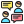

지금 기분과 비슷한 걸 골라 줘.

기본 활동에서 나눈 대화와 답변은 이 화면을 열어 둔 동안에만 남아. 새로고침하거나 대화를 지우면 없어져.
AI를 연결하면 대화 일부가 Google로 전송돼. 보내기 전에 개인정보를 가리지만, 모두 찾아내지는 못해. 이름, 학교, 주소, 연락처는 적지 말아 줘. 음성 입력을 선택하면 브라우저의 음성 서비스가 사용될 수 있어.
마음 점검은 이야기를 시작하기 위한 교육용 활동이야. 표준화된 심리검사나 진단은 아니고, AI의 답변도 틀릴 수 있어.
위험하거나 힘든 일이 있으면 가까운 선생님이나 안전하게 도와줄 어른에게 이야기해 줘. 이 서비스가 선생님에게 자동으로 연락해 주지는 않아.
서버 연결 상태를 확인하고 있어.
AI 대화는 Google로 전송돼. 실제 학생 운영 전에는 운영자가 제공사의 연령·개인정보 조건을 확인해야 해.
너를 안전하게 도울 수 있는 선생님, 상담 선생님이나 믿을 수 있는 어른에게 이 화면을 보여줘. 너를 해치는 사람에게 직접 도움을 청할 필요는 없어.
당장 위험하면 112 또는 119에 도움을 요청해.
이 화면은 긴급 구조를 요청하거나 주변 어른에게 자동으로 연락하지 않아.
지금 대화와 마음 점검, 실천 카드가 지워져. AI 연결도 해제돼.